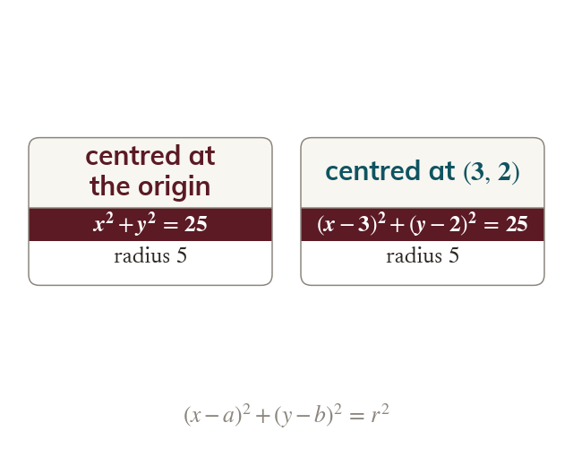

Pythagoras gives the equation
Every point on a circle is a distance from its centre. For centre this gives
Every point on the circle is a distance from the centre. For centre this gives
With the centre at the origin it is
With the centre at the origin it is